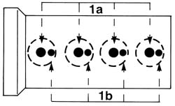
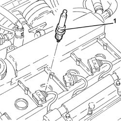

5510D10 spark plugs - r+r
- Path
- Procedures > 55 ELECTRICAL EQUIPMENT > 5510 ENGINE IGNITION > 5510D spark plugs and lead > 5510D10 spark plugs - r+r
- Kind
- repair procedure (removal / refitting; the operation number is the code)
- Applies to
- engines: 1.6 TS , 1.8 TS, 2.0 JTS, 2.5 V6, 2.0 JTS; all production periods
- Interactive page
- https://sloeber94.github.io/elrnDB-a156/en/#/3238405
Applies to: engines: 1.6 TS , 1.8 TS; all production periods
 Removing
Removing
 Refitting
RefittingPlace the car on a ramp.
1016A40 ignition coil cover on cylinder head- r+r
With the engine cold, blow through with compressed air in the spark plug openings to remove any foreign bodies or traces of dirt.
1. Undo the small side spark plugs (1a) and the large centre spark plugs (1b) and remove them.

Applies to: engines: 1.6 TS , 1.8 TS; all production periods
Check the condition of the spark plugs and, if necessary, replace them.
Applies to: engines: 1.6 TS , 1.8 TS; all production periods
Refitting
RemovingTighten the small side spark plugs and the large centre spark plugs.
 | Fastening | Component | Ø | Value (daNm) |
|---|---|---|---|---|
- | Bolt | CENTRE SPARK PLUG | M14 | 2.5 - 3.6 |
| Fastening | Component | Ø | Value (daNm) |
|---|---|---|---|---|
- | Bolt | SIDE SPARK PLUG | M10 | 1.1 - 1.6 |
Applies to: engines: 2.5 V6; all production periods
Removing
Refitting1048A48 throttle heater sleeve - r r
1072B50 sleeves connecting air capacity box to inlet manifold is - r+r
5510C18 right hand cylinder head ignition coil - r+r
1016A42 left hand cylinder head ignition coil cover - r+r
5510C16 left hand cylinder head ignition coil - r+r
Undo and remove the spark plugs.
Applies to: engines: 2.5 V6; all production periods
Refitting
RemovingRefit the spark plugs and tighten them to torque.
| Fastening | Component | Ø | Value (daNm) |
|---|---|---|---|---|
- | Spark plug | SPARK PLUGS | M14 | 3.1 - 4.0 |
5510C16 left hand cylinder head ignition coil - r+r
1016A42 left hand cylinder head ignition coil cover - r+r
5510C18 right hand cylinder head ignition coil - r+r
1072B50 sleeves connecting air capacity box to inlet manifold is - r+r
Applies to: engines: 2.0 JTS, 2.0 JTS; all production periods
Removing
RefittingEnsure that the ignition key is in the OFF position, then disconnect the negative battery terminal (-).
 | Name | Connector |
|---|---|---|
- | Battery |
Proceed with removal 1016A40 ignition coil cover on cylinder head- r+r .
Proceed with removal 5510C14 ignition coil/s - r+r .
1. Undo the spark plugs and remove them.

Applies to: engines: 2.0 JTS, 2.0 JTS; all production periods
Refitting
RemovingPlace the spark plugs back in their housings and tighten them to the recommended torque.
| Fastening | Component | Ø | Value (daNm) |
|---|---|---|---|---|
- | - | SPARK PLUGS | M14 | (Cylinder head side) 2.4 ÷ 3.0 |
Proceed with refitting 5510C14 ignition coil/s - r+r .
Proceed with refitting 1016A40 ignition coil cover on cylinder head- r+r .
Connect the negative (-) battery terminal.
Topics linked from this page (9)
- 1016A40 ignition coil cover on cylinder head- r+r
- 1016A42 left hand cylinder head ignition coil cover - r+r
- 1048A48 throttle heater sleeve - r r
- 1072B50 sleeves connecting air capacity box to inlet manifold is - r+r
- 5510C14 ignition coil/s - r+r
- 5510C16 left hand cylinder head ignition coil - r+r
- 5510C18 right hand cylinder head ignition coil - r+r
- 5530B22 battery earth lead - r+r
- A1B Battery ( BATTERY NEGATIVE )
Topics that link to this page (12)
- B10 ENGINE DOES NOT START / UNDER NO CIRCUMSTANCES
- B11 ENGINE STARTS WITH DIFFICULTY' / WHEN WARM
- B12 ENGINE STARTS WITH DIFFICULTY' / WHEN COLD
- B20 ENGINE STARTS, AND CUTS OUT STRAIGHT AWAY
- D01 ENGINE NOT RUNNING SMOOTHLY / (HESISTANT)
- D02 ENGINE NOT RUNNING SMOOTHLY / (LOSING POWER)
- D05 ENGINE DOES NOT PRODUCE BEST PERFORMANCE
- D10 ENGINE IDLE IRREGULAR
- X01 EXCESSIVE FUEL CONSUMPTION
- Z54 MISFIRE ERROR IN ONE CYLINDER
- 0010M01 100,000km service coupon, emission control versions
- 1028H10 connecting rod and piston set - r r